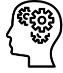

Você é mais forte do que pensa.
A vida é uma jornada cheia de altos e baixos, onde cada passo nos ensina algo novo. Mesmo nas dificuldades, há sempre uma lição a ser aprendida e um motivo para continuar. O importante é não perder a esperança e acreditar que dias melhores virão. Pequenas vitórias diárias acumulam-se em grandes conquistas ao longo do tempo da persistência e da fé em si mesma.

informacao dos dados projetos

informacao dos dados projetos

informacao dos dados projetos